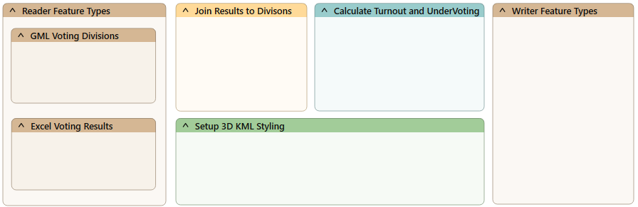
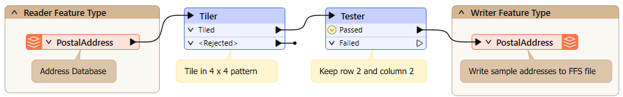
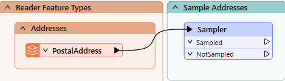

The video above is from an older version of the course. You might find it helpful to watch it as an example of prototyping a workspace, but you don't have to follow along. See the Exercise below for details.
The video above is from an older version of the course. You might find it helpful to watch it as an example of prototyping a workspace, but you don't have to follow along. See the Exercise below for details.
After completing this lesson, you’ll be able to:
In the classical sense, prototyping means creating an incomplete application to evaluate a project's feasibility.
Here, we'll stretch the definition to mean how to build a complex FME project incrementally, starting with an empty workspace and building it piece by piece to deliver a result that matches the final specification.
We will cover the techniques used for incrementally building a workspace.
The critical development technique for FME workspaces is incremental updates.
The steps to this technique are:
Although a range of 3-10 transformers is an arbitrary number, the more transformers you add, the more difficult it will be to identify the source of any problems. Beyond ten transformers is the point at which you should consider chopping that process into smaller sections.
Here, an author has planned their workspace by laying it out as a set of bookmarks on the canvas:

Now, the author can complete and test each section simultaneously, keeping the overall goal in mind.
It can be easy to start developing a workspace and forget to save it! FME keeps a recovery file as soon as the workspace is saved for the first time, but until then, you risk an irretrievable loss.
Save early, save often!
When the FME project is large and complex, the source data will likely be large and complex, too. So, when creating a workspace in small increments and testing each part, it's better to avoid using the entire dataset. It's best to create a small sample of data, extracting it from your source and writing to a neutral format like FFS, FME's internal format, or using feature caches.
Sampling is beneficial for databases because it also avoids the problems of waiting for network traffic and database responses.

Here, the workspace author extracts a sample of source data by reading from a database, splitting it into tiles, and writing just one tile to the FFS format. While prototyping a solution, the author can use this single tile to represent the entire source database table.
Another transformer to use would be the Sampler, although the features selected by it would not be spatially adjacent.
It's easy to work on a single workspace file when making incremental changes to a workspace. However, there are various problems with this:
Therefore, it is better to keep versioned workspaces, where a different copy is kept for each set of revisions. This precaution can be taken manually within the file system or using a version control system like Git.
It is a good idea to keep and version all materials related to an FME project, including:
It's better not to store any personal information, including passwords. Also, you don't need to store temporary files.
You can use a few methods to keep track of version and editing history:
For additional information on Workspace Comparison, please see the Compare Workspaces course.
You can integrate Git into your FME Workbench comparison workflow. You can use the command line, TortoiseGit, or Sourcetree to interface directly with the Compare Workspaces tool.
We're going to do something different for this exercise. You have an option:
Scenario

You are working as Sven's colleague and need to prototype your own workspace. Your workspace will alert street food vendors in your city when upcoming road construction projects might impact their business.
You decide to team up and prototype your workspaces together, following the same general steps.
Open the starting workspace (C:\FMEData\Workspaces\UseDataIntegrationBestPractices\use-prototyping-and-incremental-development.fmw) in FME Workbench (2025.0.1 or later).
It uses the following datasets:
You have been asked to create a workspace that:
Let's get to work prototyping your approaches.
To develop this workspace, Sven considers what steps might be required. He can then create sections with bookmarks and fill them in as he goes along.
He asks himself the following questions:
What steps might he need to take between reading and writing? He might need to:
He comes up with the following list:
Write the list of actions your workspace (option #1) or the food vendors workspace (option #2) will carry out in as much detail as possible. You can use annotation to take notes, if you want.
Sven adds the reader(s) and writer(s) he plans to use and their feature types.
If you started with the workspace included in this lesson, the readers and writer have already been added.
It's better to start small and add a single reader and writer feature type; he can continually expand the workspace later.
He observes his data's schema and notes if any schema changes are required.
Choose a feature type definition mode when adding your writer that will help you define the destination schema as quickly as possible:
- Automatic: This adds a new feature type with the attribute definition parameter set to Automatic, which is the default.
- Choose this mode if you'd prefer to read your data in, modify the schema as you go, and then write out whatever you end up with.
- Manual: Adds a new feature type with the attribute definition parameter set to manual.
- Choose this mode if you want to specify the destination schema precisely.
- Copy from Reader: Adds a new feature type with the attribute definition parameter set to manual but predefined to the schema of an existing Reader feature type.
- Choose this mode if the destination schema will be the same or similar to the source schema.
- Import from Dataset: Adds a new feature type with the attribute definition parameter set to manual but predefined to the schema of an external dataset (just like using the Import Feature Types tool).
- Choose this mode if you have to meet exact requirements for writing based on an existing schema in another dataset.
- Dynamic: Adds a new feature type with the attribute definition parameter set to dynamic.
- This mode is more advanced; choose it if you need to write out whatever you receive when the workspace runs without knowing the schema.
- None: Does not add any new feature type.
- You shouldn't choose this mode if you want to write out data.
Add the readers and writers, observe their schemas, and determine if any schema changes are required for your workspace (option #1) or the food vendors workspace (option #2).
Sven begins to plan his workspace by adding bookmarks to the Canvas representing the steps he will take.
He can't know which sections will be larger in advance, so he makes all bookmarks the same size.
Here's an example continuing from his list of actions above:

Sven considers the transformers he might want to use. He considers each step and adds any transformer he thinks he might need to a Transformers bookmark.
He comes up with the following transformers he might need for his workspace:

Create bookmarks and add possible transformers to your workspace (option #1) or the food vendors workspace (option #2).
Sven knows his prototyping will be faster if he works with a source data sample.
He knows many ways to do this, depending on the situation:
He decides to sample every 25th address while authoring our workspace. He adds a Sampler transformer:

And configures it like this:

He runs the workspace to ensure FME samples the data correctly.
He inspects the sampled data to ensure it is a small dataset (say, less than 1,000 features, depending on feature size) and has the correct variation in values he might expect from his data.
Use a method like the Sampler to create a sample of the source data in your workspace (option #1) or the food vendors workspace (option #2).
Now that he has an outline of his workspace and a sample of the data, he saves his workspace.
He includes a date or version number (like GarbageCollection-2025-05-18.fmw).
He commits his workspace to his organization's version control system with a meaningful commit message.
If you have time, you can continue building your workspace section by section. Remember, the goal of this exercise is not to complete the workspace, but to practice prototyping a workspace. Each time you add a transformer, run the workspace to update feature caches, inspect the most recent cache, and determine if you made the correct decision. If so, proceed to add the next transformer. If not, change the parameters or try a different transformer. Read the transformer Help documentation if you get stuck.
If you are taking a Safe Software-hosted training course, consider sharing what you learned as you prototyped your workspace in the chat. What problems did you encounter?
You can also back up your workspace prototype on your virtual machine for further development by emailing it to yourself or uploading it to a file-sharing system.